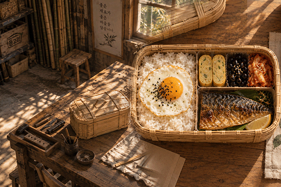
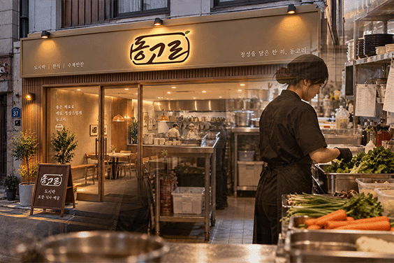

ABOUT DONGGORI
맛있는 한끼가
그날의 행복한 하루를
만든다.
DONGGORI BRAND STORY
고유한 손맛에
정성을 담아,
소중한 한 끼에
담았습니다.
좋은 재료, 정직한 손맛, 그리고 대접하는 마음까지.
동고리 하나에 정성을 담아 전달합니다.

동고리 유래
‘동고리’는 오늘날처럼 플라스틱 수납함이나 가방이 흔하지 않았던 시절, 우리 선조들은 주변에서 쉽게 얻을 수 있는 자연 재료를 엮고 짜서 다양한 생활용구 였으며대나무처럼 자연에서얻은 재료를 활용한 생활공예품은 쓰임과 공간에 맞춰 여러 형태로제작되기도 했습니다.그덕에 다양한 명칭을 가지고 있으며 대표적인 예로 “반지고리”, “밥 동고리”가있으며 지금은 그조차도 잊혀져 가고 있습니다.“동고리”는 고리짝이 가진 ‘무언가를 소중히 담는다’는 쓰임과 전통적인 짜임의 이미지에서 영감을 받아 이를 현대적인 도시락 으로 재해석한 브랜드입니다.
01 — TRADITION · 전통
옛스러움을 보존하며, 현대에 담다.
자연의 대나무로 만든 전통적인 아름다움과
선조들의 지혜를 오늘의 도시락에 담았습니다.


02 — TASTE · 한식
익숙한 한식을, 새로운 즐거움으로 담다.
정겨운 밥과 반찬을 한 끼에 듬뿍 담아
다양한 맛과 색을 한눈에 즐길 수 있도록 구성했으며,
익숙한 한식에 동고리만의 보는 즐거움을 더합니다.
03 — NATURE · 자연
한 끼의 즐거움을, 자연과 오래 이어가다.
자연 소재가 가진 따뜻한 질감과
다시 사용할 수 있는 도시락통을 통해
먹는 순간뿐 아니라 그 이후까지 생각합니다.
옛것의 지혜를 잇고,
오늘의 한 끼를 담아,
내일의 자연으로 이어갑니다.


오래된 가치를 잇고,
새로운 일상을 만들어갑니다.
우리의 전통이 낯설지 않도록, 누구나 쉽게 경험할 수 있도록
밥 동고리는 고리짝에 담긴 옛 지혜와 정성을 오늘의 한식으로 전하며,
세대를 넘어 사랑받는 도시락 브랜드로 성장하고자 합니다.
전통을 잇고, 오늘을 담아, 내일로 나아가다.